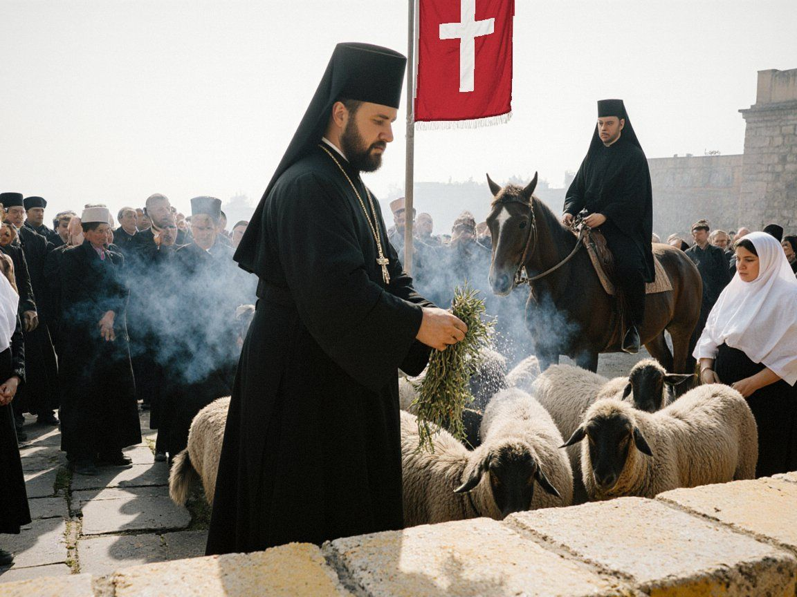

Visit and pilgrimage
Everyone is welcome at the Church of St. Janyl: pilgrims, worshippers, visitors of every faith and none. The cathedral is a living church and the mother church of our people. We ask visitors to remember that others have come to pray.
Opening hours
| Summer (1 April – 31 October) | Winter (1 November – 31 March) | |
|---|---|---|
| Cathedral | 7:00–19:00 | 8:00–17:00 |
| Crypt of Mar Gewargis | 9:00–17:00 | 9:00–16:00 |
| Candle desk and bookshop | 8:00–18:00 | 9:00–16:00 |
Entry is free. Visitors are asked not to walk about the nave during the Holy Qurbana (see times). On the Feast of St. Janyl and at the Resurrection the cathedral is open through the night.
In the church
- Shoulders and knees covered. Men uncover their heads. Women are asked to cover their heads; white scarves can be borrowed at the north door.
- No photographs during the Holy Qurbana, and no flash at any time near the icon of St. Janyl.
- Candles are of beeswax and are sold at the candle desk; please do not bring your own. If you cannot come, you may light a candle online.
- Offerings of milk, kymyz and white ribbons are welcome at the shrine trees on the esplanade, not inside the church. No animal is ever killed at the cathedral.
- Arms of any kind may not be carried into the cathedral precinct. This rule has been kept by all sides since 2007.
Getting here
Cathedral Hill on Attelkom Maps. Iyık Janyl lies on State Route 1, about 347 kilometres from Talas by road and 8 kilometres upriver from Tash-Kömür. Buses from the Talas bus station take about seven hours. There is no railway. In the city, the Cathedral Hill road leaves State Route 1 on the east bank and climbs about 4 kilometres to the precinct. City buses go up every twenty minutes from the Lower Town; many pilgrims walk the old stairway from the river instead. Guesthouses in the city and tours from Talas are listed by Visit Irad.
Pilgrimage Hostel
The Iyık Janyl Pilgrimage Hostel, in a restored 19th-century caravanserai beside the cathedral, has about 180 beds in rooms and dormitories. Poor pilgrims eat free of charge. Bookings by telephone, +996-39-6-22-18-05, or at the hostel gate; groups confirm in writing on the hostel booking form SJ-1 (PDF). During the Feast the archbishopric also puts up yurts below the hill for riders from the valleys.
The Feast of St. Janyl, 24 August

The great day of the year. On the evening of 23 August a candlelit procession climbs from the old town to Cathedral Hill. On the 24th the Archbishop celebrates the Holy Qurbana, sung by the Seminary Choir, and the priests bless the horses and sheep on the esplanade with spring water and juniper smoke. Blessed kümöch is given to everyone. In the afternoon there are races, archery and ulak below the hill, and the bards sing the Epic of Janyl. Pilgrims from the tribal regions come unarmed under crossings agreed each year with the help of the United Nations mission. The pilgrimage season lasts until the Feast of the Cross on 14 September.
Other places of pilgrimage
- Old Iyık Janyl (Shar-i-Kuhna), the medieval Christian city on the west bank, about 2 kilometres from the centre, with its basilica and gravestones.
- The cave chapel of Kara-Suu Canyon, where the books of the church were hidden in the 17th century and again in the 1930s. A day’s walk; ask the hostel for a guide.
- Maryam-Bulak, the spring of St. Maryam in the Talas Alatau foothills, visited in late summer.
- The Irad Palace of Art, opposite the cathedral park on Cathedral Street, holds many of the icons and vessels that families hid during the Soviet years. It is free on the Feast.